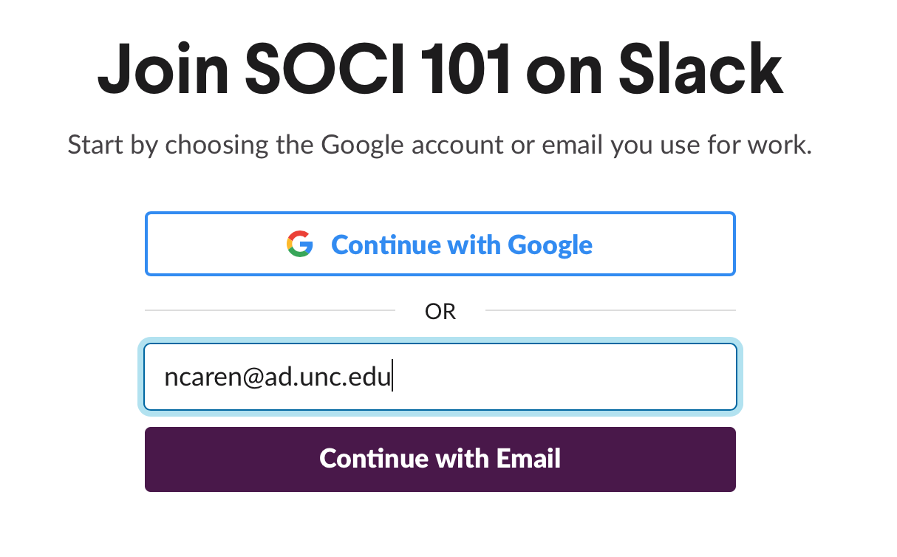
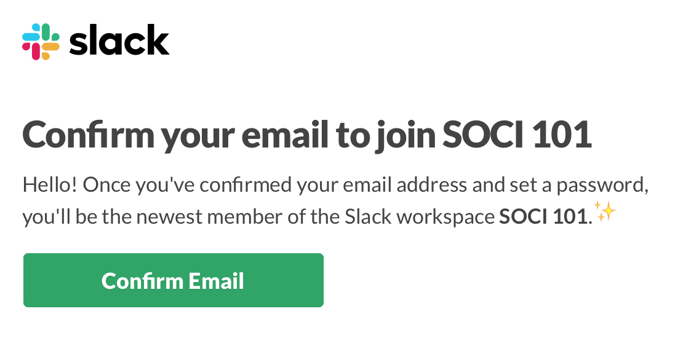
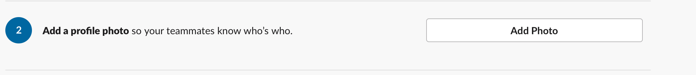
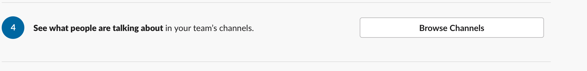
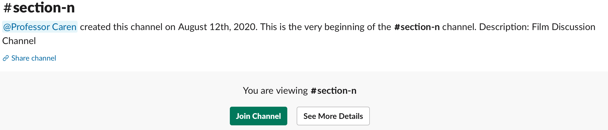

Slack Signup¶
Visit the SOCI101 Slack signup page.
Signup with your school email (ending in unc.edu). This way we know who you are and you get full credit for your participation. 
After confirming your email, enter your name and password. 
You will now be sent to the Getting Started Page. If you want, you can add a profile picture. It’s a nice thing to do. 
Most importantly, select “Browse Channels” from option 4 to join your discussion section. 
Which discussion section you are in is based on the last two digits of your PID. Use this table to lookup which section you are in:
PID Range |
Section Letter |
|---|---|
00-04 |
A |
05-09 |
B |
10-14 |
C |
15-19 |
D |
20-24 |
E |
25-29 |
F |
30-34 |
G |
35-39 |
H |
40-44 |
I |
45-49 |
J |
50-54 |
K |
55-59 |
L |
60-64 |
M |
65-69 |
N |
70-74 |
O |
75-79 |
P |
80-84 |
Q |
85-89 |
R |
90-94 |
S |
95-99 |
T |
Select your section, making sure you were using the last two digits of your PID. For example, if your PID is 730142368, your last two digits are 68 and you would be in section N. On the next page, click the green “Join Channel” button. 
Finally, answer the two poll questions in the #announcements channel by upvoting the emoji that matches your answer.